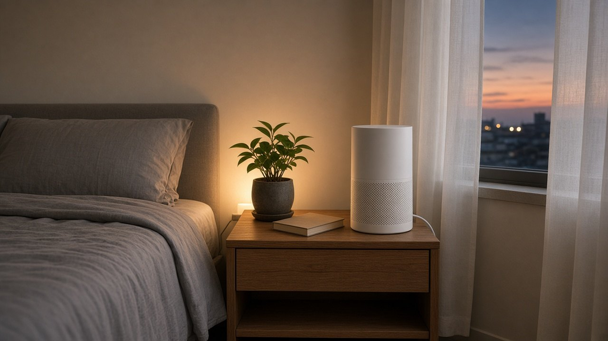
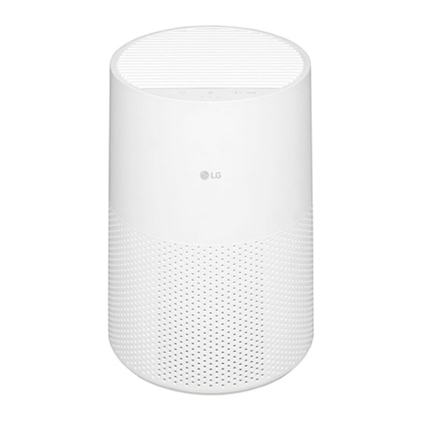
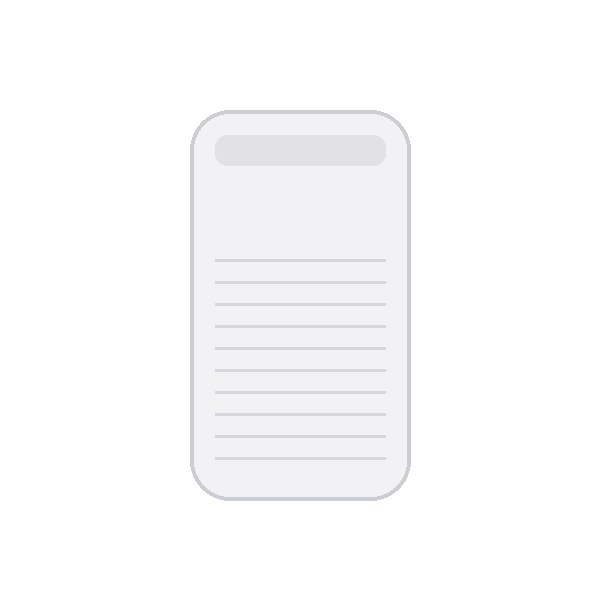
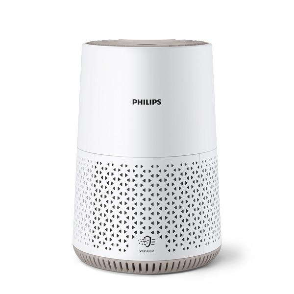
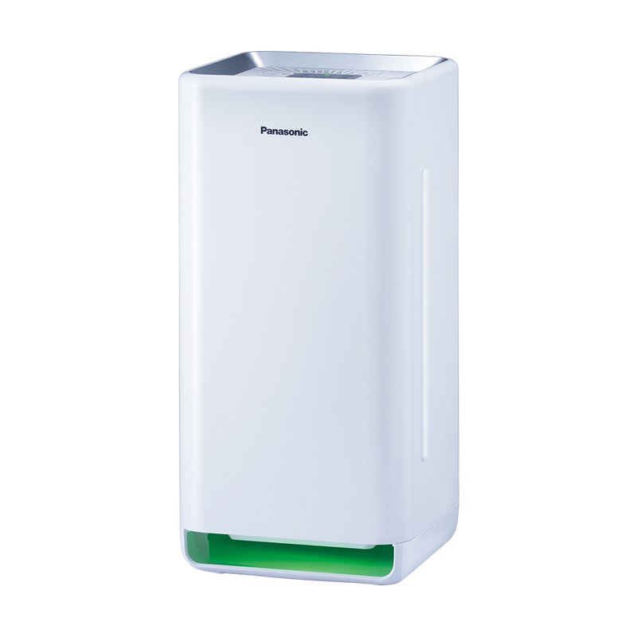

小坪數租屋空氣清淨機怎麼挑？4 款比較，先算每年濾網＋電費（2026）
本文怎麼整理。空氣清淨機的機器價只是第一筆錢，之後每年還要付濾網和電費。以下依 2026 年 11 月 28 日 LG、3M、飛利浦、Panasonic 的台灣官方網站、官方商店、官方購物商城與經濟部能源署節能標章查詢與原廠說明書、全球規格表，整理 4 款官方價 NT$4,990–5,990 的小坪數機型，並查標準檢驗局商品召回訊息。沒有實機測試，也不比較淨化快慢、噪音實測、除味或銷量。官方沒寫的項目一律標「未列」。內容由 AI 協助整理，規格與價格依文中來源核對。
快速結論：先排除不適合的
以下只摘錄可核對的官網規格與限制。編號不是排名；細節請看各款說明。
- NT$4,990–5,990LG 官網價、3M 官方購物網特價、飛利浦官方商店價與 Panasonic 官方商城會員價（查詢日 2026-11-28）
- 約 883–1,536 元3 款能算的每年濾網＋電費（濾網按年限均攤、每天 8 小時最高檔）；首年機器附濾網，只付電費約 83–241 元；LG 濾網價未列，算不出來
- 12–35WLG、3M、Panasonic 為官方標示功率；飛利浦 12W 台灣官網未列，取全球規格表與能源署資料
LG AS301GW10 的 AeroMini 濾網價，LG 台灣官網配件頁沒列，所以這款只能算電費（每天 8 小時最高檔約 172 元），算不出完整的每年成本。3M FA-U90 最高 35W、濾網 U100-F 約每片 1,295 元（以官網「最長 1 年」計，提早換會更高），每年濾網＋電費約 1,536 元起，在能完整估算的 3 款中最高；飛利浦 AC0650/80 約 1,173 元；Panasonic F-P25LH 約 883 元。
-
要官網標 8 坪、低速 26 dB，接受 25W 與濾網官方價未列
LG AS301GW10｜8 坪・25W・濾網價未列 不適合 要先知道每年濾網錢的人（LG 台灣官網沒有 AeroMini 濾網價，無法算完整成本）
-
要 3–7.5 坪、官網列待機 0.68W 與濾網 2 入價，接受最大 35W
3M FA-U90｜3–7.5 坪・35W・濾網 2 入 2,590 元 不適合 想把每年濾網加電費壓到最低的人（這組假設下約 1,536 元起，在能完整估算的 3 款中最高） 別買錯 3M 同系列的 FA-U120（4–10 坪、40W）、FA-U150（5–12 坪、50W）濾網是 U200-F，FA-U90 用的是 U100-F，濾網別買錯
-
要 6–7 坪、官方濾網 1,090 元、官網列 19–49 dB
飛利浦 AC0650/80｜6–7 坪・約 12W・濾網 1,090 元 不適合 要用台灣官網標示的功率算電費的人（最大功率台灣官網未列）
-
要濾網約 2 年換一次、說明書列 12.0W，接受噪音未列
Panasonic F-P25LH｜3–6 坪・12.0W・濾網 1,600 元／約 2 年 不適合 要看到官方噪音數字的人（台灣官網未列），或機身預算上限是 5,000 元的人（本次查得的官方商城會員優惠價為 5,990 元，4 款中最高）
編號為文章編排順序，不是實機評測排名。本次未查庫存，選購當下請以賣場顯示為準。
每年濾網＋電費是用官方功率算電費、再加上按年限均攤的濾網價，不是實測。先量床邊可用空間，再對照機身尺寸；電器使用限制請查租約。
目錄（10 項）
4 款候選怎麼對照
本站含蝦皮分潤連結，透過連結購買我可能獲得分潤，不影響你的價格
| 商品 | 適用坪數／風量標示（標準不同） | 最大功率／噪音 | 濾網：官方價／年限 | 年均濾網＋電費（濾網按年限均攤；每天 8 小時最高檔） | 價格 |
|---|---|---|---|---|---|
|
 |
8 坪／CASR 3.50 cmm | 25W／26–48 dB | H13 濾網；官方價未列／約 1 年 | 濾網價未列；電費約 172 元 | NT$4,990 LG 台灣官網價（2026-11-28 查詢） |
|
 |
3–7.5 坪／CADR 90 CFM（約 153 CMH） | 35W／最低 28.5 dB | U100-F 2 入 2,590 元（約每片 1,295）／最長 1 年 | 約 1,536 元起（濾網以最長 1 年計 1,295＋電費 241） | NT$4,990 3M 官方購物網特價（2026-11-28 查詢） |
|
 |
6–7 坪／CADR 170 m³/h；CASR 2.50 cmm | 約 12W（推得）／19–49 dB | FY0611/30 1,090 元／1 年 | 約 1,173 元（濾網 1,090＋電費 83） | NT$4,990 飛利浦官方商店價（2026-11-28 查詢） |
|
 |
3–6 坪（基準 5 坪）／CASR 2.20 cmm | 12.0W／噪音未列 | F-ZMUS40W 1,600 元／約 2 年 | 約 883 元（濾網 800＋電費 83） | NT$5,990 Panasonic 官方商城會員優惠價（2026-11-28 查詢） |
查詢日 2026-11-28・編號非排名・點型號看詳細
- LG AS301GW10 NT$4,990 LG 台灣官網價（2026-11-28 查詢） 8 坪 · 25W · 26–48 dB CASR 3.50 cmm · 濾網價未列 · 約 2.8kg
- 3M FA-U90 NT$4,990 3M 官方購物網特價（2026-11-28 查詢） 3–7.5 坪 · 35W · 最低 28.5 dB CADR 90 CFM · 待機 0.68W · 濾網 2 入 2,590 元
- 飛利浦 AC0650/80 NT$4,990 飛利浦官方商店價（2026-11-28 查詢） 6–7 坪 · 約 12W · 19–49 dB CADR 170 m³/h · 待機 1.00W · 濾網 1,090 元
- Panasonic F-P25LH NT$5,990 Panasonic 官方商城會員優惠價（2026-11-28 查詢） 3–6 坪 · 12.0W · 約 4.9kg CASR 2.20 cmm · 待機 0.70W · 濾網約 2 年
蝦皮售價依賣場即時變動，以點進去的頁面為準。
「未列」＝該來源頁沒有標示，不代表沒有。CASR 是台灣 CNS 粉塵標準、單位 cmm；CADR 是另一套標示、單位 CFM 或 m³/h，兩者不能直接比大小。每年濾網＋電費＝濾網官方價 ÷ 官方建議年限 ＋ 最大功率（kW）× 8 小時 × 365 天 × 約 2.357 元／度（台電住宅非時間電價 121–330 度級距，非夏月 2.26 元、夏月 2.55 元，以 8 個月與 4 個月加權），第 1 年機器已附濾網，首年另購濾網費為 0。價格來源各不相同，不能當蝦皮售價。
逐款比較
LG PuriCare
AS301GW10
LG AS301GW10（PuriCare AeroMini，建議適用 8 坪，功率輸入 25W）
- 適用坪數
- 建議 8 坪
- 風量標示
- CASR 3.50 cmm；能源效率值 0.177 CASR/W、能源等級 1 級
- 功率／電壓
- 輸入 25W；100–240V 50/60Hz
- 噪音
- 高 48 dB／低 26 dB
- 濾網
- H13 濾網；約 1 年更換（以每天 10 小時為基準）；官方價未列
- 尺寸／重量
- 寬 250×高 360×深 250 mm；2.8kg
- 其他
- LED＋觸控按鈕；ThinQ Wi-Fi；懸浮微粒 PM1.0 指示
- 待機功率
- 未列
- 每年電費
- 每天 8 小時最高檔約 172 元；24 小時約 516 元
官網規格列建議適用 8 坪、功率輸入 25W、噪音高 48 dB／低 26 dB、CASR 3.50 cmm、能源效率值 0.177、能源等級 1 級，電源 100–240V，機身寬 250×高 360×深 250 mm、2.8kg。官網寫使用 H13 濾網，約 1 年更換，並可用 ThinQ 連 Wi-Fi。
濾網官方價未列：2026-11-28 查 LG 台灣官網配件頁沒有 AeroMini 濾網，所以每年濾網錢算不出來，只能算電費約 172 元（每天 8 小時最高檔）。待機功率也未列。官網列售價 NT$4,990、劃線價 NT$5,990。
規格來源：LG 台灣官網商品頁規格表與新品發布頁
3M 淨呼吸 倍淨系列
FA-U90
3M 官方購物網；同頁原價 NT$6,990（3M 官網規格表另列建議售價 NT$5,990），以官網頁面為準。
2026-11-28 查詢3M FA-U90（倍淨系列，適用 3–7.5 坪，最高耗電 35W）
- 適用坪數
- 3–7.5 坪
- 風量標示
- CADR 90 CFM（約 153 CMH，3M 說明為換算值，非實測）；能源效率 CASR/W（Dust）0.083 cmm/W、第 5 級
- 功率／電壓
- 總額定消耗電功率 35W；110V 60Hz；待機 0.68W
- 噪音
- 低速最低 28.5 dB；最高噪音未列
- 濾網
- U100-F（隨機附）；2 入建議售價 2,590 元（約每片 1,295 元，除以 2 的折算）；官網寫最長 1 年
- 尺寸／重量
- 本體 284×216×392 mm（寬×深×高）；淨重 3.5kg（±5%）
- 其他
- DC 直流變頻馬達；觸控介面；台灣製造；濾網也適用 FA-B90DC、FA-B200DC
- 每年電費
- 每天 8 小時最高檔約 241 元；24 小時約 723 元
官網規格列 CADR 90 CFM（約 153 CMH）、適用 3–7.5 坪、最高耗電 35W、待機 0.68W、低速最低 28.5 dB、能源效率 CASR/W 0.083 cmm/W（第 5 級），機身 284×216×392 mm、淨重 3.5kg，110V 60Hz，台灣製造。隨機附 U100-F 濾網，官網寫最長可用 1 年。
最大功率 35W 是 4 款中最高，濾網 U100-F 又是 2 入裝 2,590 元才有價格，這組假設下每年濾網＋電費約 1,536 元起，也是能完整估算的 3 款中最高。3M 官網另有每日開機 12 小時、每月家庭用電 120 度以下電費試算，每月不到 21 元的說法，用的是不同的電價級距與時數，不能和本文的數字互比。
規格來源：3M 官方購物網、3M 台灣官網商品頁與規格表
飛利浦 迷你奈
AC0650/80
飛利浦 AC0650/80（迷你奈，適用 6–7 坪，最大功率約 12W）
- 適用坪數
- 6–7 坪（官網寫適用 7 坪）
- 風量標示
- CADR 170 m³/h；能源署 CASR 2.50 cmm；能源效率第 1 級（0.208 cmm/W）
- 功率
- 最大功率台灣官網未列；全球規格表 AC0650/10 寫低於 12W，能源署資料換算約 12.0W（旁證）；待機 1.00W
- 噪音
- 19–49 dB（19 dB 為睡眠模式）
- 濾網
- FY0611；官方價 FY0611/30 為 1,090 元；官網建議 1 年
- 尺寸
- 24.3×23.7×34.1 cm
- 模式／保固
- 自動／高速風速／睡眠 3 種；官方商店購買免登錄享全球 2 年保固
- 每年電費
- 每天 8 小時最高檔約 83 元；24 小時約 248 元
官方商店規格列適用 6–7 坪、CADR 170 m³/h、噪音 19–49 dB、待機 1.00W、能源效率第 1 級（0.208 cmm/W），機身 24.3×23.7×34.1 cm，3 種淨化模式；濾網 FY0611，官方價 1,090 元，官網建議 1 年。官方商店購買免登錄享全球 2 年保固。
台灣官網沒有列最大功率。飛利浦全球規格表 AC0650/10 寫最大耗電低於 12W，能源署 CASR 2.50 除以能源效率值 0.208 約 12.0W，本文取 12W，若台灣版官方標示不同，電費要跟著調整。這款官方商店頁同時列有 NT$9,990 的另一個價格，以官網頁面為準。
規格來源：飛利浦台灣官方商店商品頁與濾網頁、經濟部能源署節能標章查詢、AC0650/10 全球規格表
Panasonic 負離子系列
F-P25LH
Panasonic F-P25LH（負離子系列，適用 3–6 坪，總額定消耗電功率 12.0W）
- 適用坪數
- 適用 3–6 坪；基準坪數 5 坪
- 風量標示
- 2.8／2.3／1.0 m³/min；CASR 2.20 cmm；能源效率值 0.183 cmm/W（第 1 級）
- 功率／電壓
- 總額定消耗電功率 12.0W；待機 0.70W；110V/60Hz
- 噪音
- 未列（台灣官網）
- 濾網
- HEPA 濾網 F-ZMUS40W；官方商城價 1,600 元；說明書寫約 2 年
- 尺寸／重量
- 520×250×250 mm；4.9kg（官網）
- 節能標章
- 證書有效期 2024/12/13–2026/12/12
- 每年電費
- 每天 8 小時最高檔約 83 元；24 小時約 248 元
官方商城與台灣官網規格列適用 3–6 坪、基準坪數 5 坪、風量 2.8／2.3／1.0 m³/min，機身 520×250×250 mm、約 4.9kg。說明書（2023.3 版，我們讀的是經銷商提供的原廠說明書複本）列 CASR 2.20 cmm、能源效率值 0.183、總額定消耗電功率 12.0W、待機 0.70W，濾網 F-ZMUS40W 使用壽命約 2 年，官方商城價 1,600 元。
台灣官網沒有列噪音，官方價是 4 款中最高。能源署查到節能標章證書有效期至 2026/12/12，距查詢日約兩週，是否換證本次沒查。蝦皮直營頁面的標價可能和官方商城不同，以點進去的頁面為準。
規格來源：Panasonic 官方購物商城商品頁、台灣官網規格頁、原廠說明書複本與經濟部能源署節能標章查詢
適合誰
- LG AS301GW10：官網標示 8 坪、低速 26 dB；濾網官方價未列，先向 LG 客服或官方通路確認濾網型號與價格。
- 3M FA-U90：標示適用 3–7.5 坪，待機 0.68W；最大功率 35W，濾網以 2 入裝計價，先確認一次要買 2 入。
- 飛利浦 AC0650/80：標示適用 6–7 坪，替換濾網 1,090 元，官網列 19–49 dB；最大功率台灣官網未列，先確認這點可否接受。
- Panasonic F-P25LH：說明書列總額定 12.0W、濾網約 2 年換一次；台灣官網沒列噪音，先確認可否接受。
不管選哪台，下單前確認濾網型號與價格、保固條件，並以租約與房東規定為準。
常見問題
為什麼沒放其他款？
這次只放查得到台灣官方價格與規格的款：3M FA-T10AB 已由 3M 台灣官方公告停產；Sharp FU-J30T 官網沒有台灣標價；Xiaomi 4 Lite 官方頁價格讀不到；Coway AP-1019C 官方頁讀不到可核對的價格；Honeywell HPA310WTW 官方通路價 NT$13,900 以上，不同價位帶；IRIS IAP-A25、IAP-S20C 約 2,000 多元，也沒有 CADR 與功率數字；飛利浦 AC0819/80 沒找到可用的官方商品頁。這份是我們查得到的款，不是全市場，也不是排名。
LG AS301GW10 的濾網多少錢？
2026-11-28 查 LG 台灣官網配件頁，沒有 AeroMini 濾網的價格，所以本文不算 LG 的濾網錢，也不拿蝦皮第三方濾網價代替。下單前請向 LG 客服或官方通路確認濾網型號、價格與更換週期。
這 4 款有出現在召回名單嗎？
沒有。2026-11-28 以 4 個型號分別查標準檢驗局商品召回訊息都是 0 筆；以「空氣清淨機」查共 4 筆（伊萊克斯 2025 年、大金 2014 與 2010 年、台灣明尼蘇達礦業製造 CHIMSPD-00UCRC-1／-2 2013 年），以「清淨機」共 6 筆（多出富奇賴 GC1 光能清淨機與宏碁智新清淨機，都是 2025 年）。以品牌查詢：「飛利浦」2 筆（2011 年吹風機、2008 年捕蚊燈）、「樂金」3 筆（洗衣機與電冰箱）、「Panasonic」4 筆（電子鍋電源線與筆電、平板電池）、「3M」「LG」「Philips」「國際牌」0 筆。明尼蘇達礦業 2013 年那筆是 3M 的其他型號，不是 FA-U90。以上是 2026-11-28 當天的查詢結果。
每年濾網＋電費是怎麼算的？每天開 24 小時會差多少？
算式見上方「每年成本怎麼算」。按表列功率每天運轉 24 小時的年用電與電費：LG 219 度約 516 元、3M 306.6 度約 723 元、飛利浦與 Panasonic 各 105.1 度約 248 元（每天 8 小時則是 LG 73.0 度、3M 102.2 度、飛利浦與 Panasonic 各 35.0 度）；加上濾網後，3M 約 2,018 元、飛利浦約 1,338 元、Panasonic 約 1,048 元，LG 濾網價未列。以上是用官方功率算電費、再加上按年限均攤的濾網價，沒有實測；24 小時情境濾網仍按官方年限計，開越久濾網可能越早到期，實際會更高。
資料與更新紀錄
- 最後核對日
- 核對範圍
- 規格、價格：2026-11-28 查詢 LG 台灣官網商品頁、3M 官方購物網與 3M 台灣官網規格頁、飛利浦台灣官方商店（商品頁與濾網頁）與全球規格表、Panasonic 官方購物商城與台灣官網規格頁、經銷商提供的原廠說明書複本（2023.3 版）與經濟部能源署節能標章查詢。召回：標準檢驗局商品召回訊息查詢。庫存未查。Panasonic 節能標章證書有效期至 2026/12/12，是否換證本次未查。
- 這次改了什麼
- 首次發布。
- 資料來源
- LG：AS301GW10 商品頁、新品發布；3M：官方購物網小坪數頁、FA-U90 商品頁、規格表；飛利浦：AC0650/80 官方商店頁、濾網頁、能源署節能標章查詢、AC0650/10 全球規格表；Panasonic：官方商城頁、官網規格頁、能源署節能標章查詢；電價：台電；召回：標準檢驗局